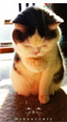

<!--
  Generated template for the DetailPage page.

  See http://ionicframework.com/docs/components/#navigation for more info on
  Ionic pages and navigation.
-->
<ion-header no-border>

  <ion-navbar color="yellow">
    <ion-title>{{getconversation.name}}</ion-title>
  </ion-navbar>

</ion-header>


<ion-content padding class="detail">

  
  

</ion-content>

<ion-footer>
  <ion-toolbar>
      <div style="margin: 2px auto">
        
        <input type="text" placeholder="输入聊天内容……" >
        
        
      </div>
      
  </ion-toolbar>
</ion-footer>